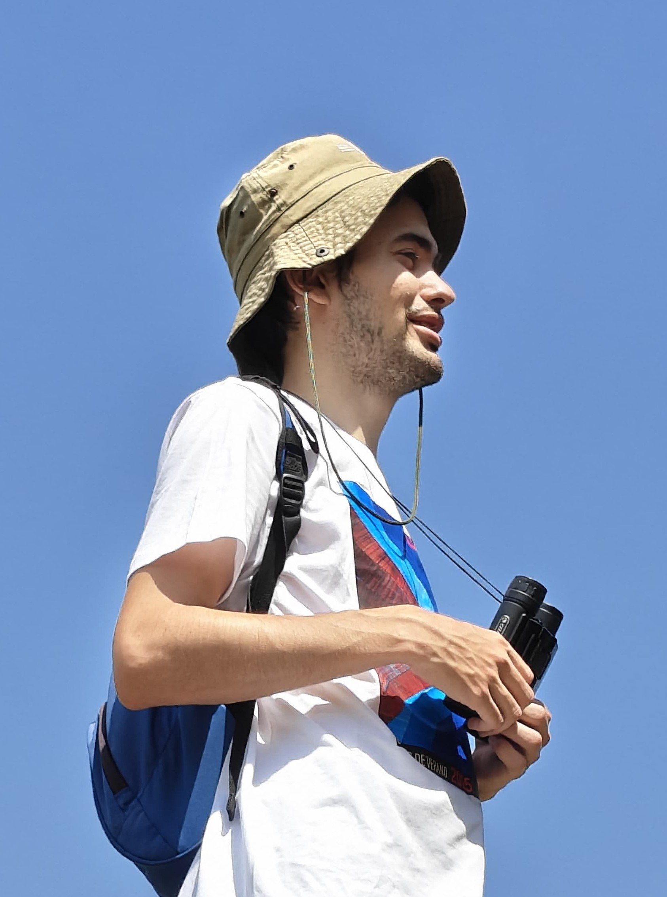

Sobre mí
Hola! Soy Javier Ramos Ortega, autor del proyecto Junto al Púlsar. Me gadué en Física por la Universidad de Zaragoza en 2024 y he sido secretario de la asociación de estudiantes Hache Barra durante tres años.
Realicé el Máster en Profesorado y ahora soy profesor sustituto en el Departamento de Informática e Ingeniería de Sistemas de la EINA.
Aquí comparto mi pasión por la física, la programación, la educación, y todo lo demás. También puedes seguirme en BlueSky.

Proyectos personales
Simuladores y juegos
Muchos fenómenos son complicados de visualizar. Un buen simulador ayuda a entenderlos más y mejor.
- Orbitales atómicos
- Gravedad newtoniana
Biblioteca
Algunas cosas que he escrito y que he leído.
- Relatos cortos
- Trabajos académicos
- Mapa histórico-científico?
- Recomendaciones
Didáctica
En mi labor de profe he creado actividades y propuestas didácticas para todas las edades.
- Situaciones de aprendizaje
- Charlas y seminarios
- Olimpiadas y competiciones?
Canal y audiovisual
El formato vídeo permite expresarse de una forma de más llamativa. Suscríbete al canal de YouTube.
- Divulgación
- Actividades
- Recomendaciones